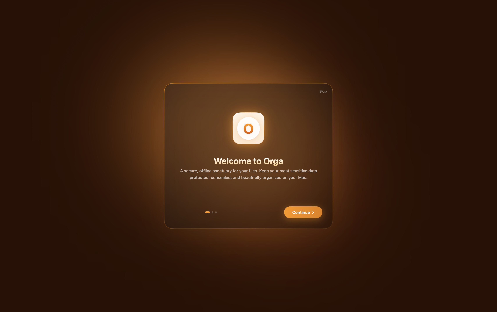
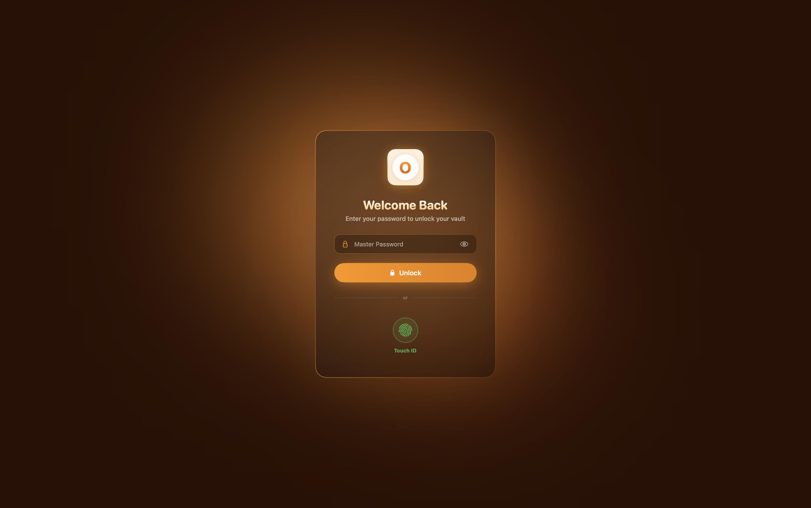
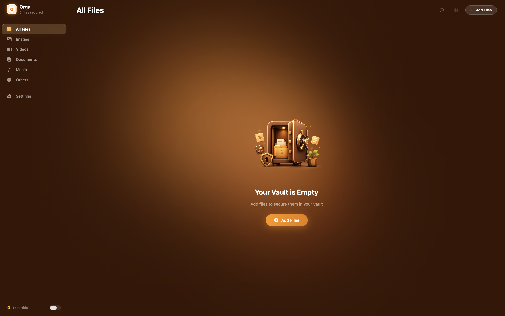
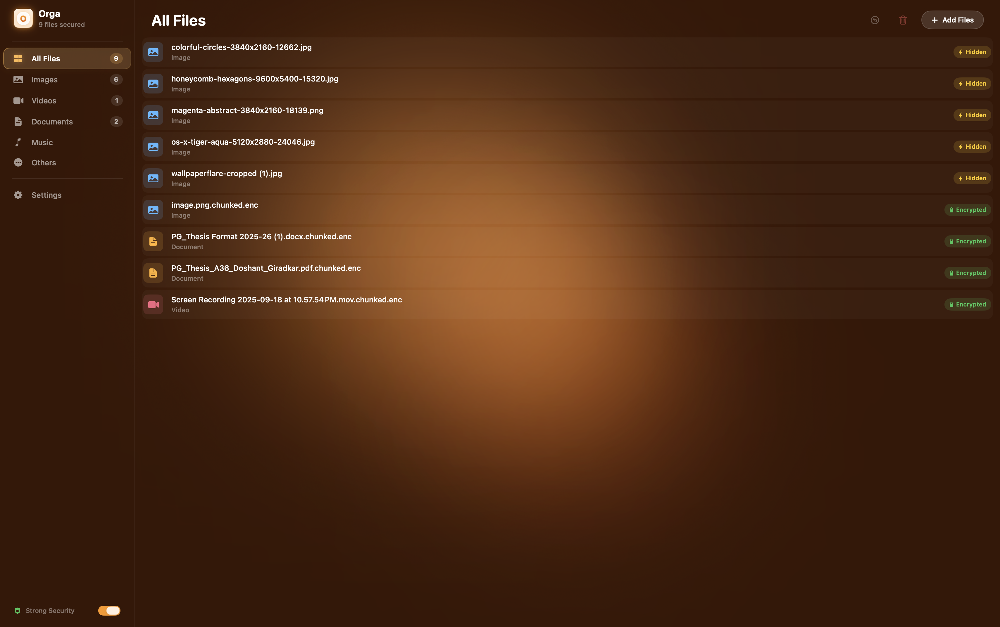
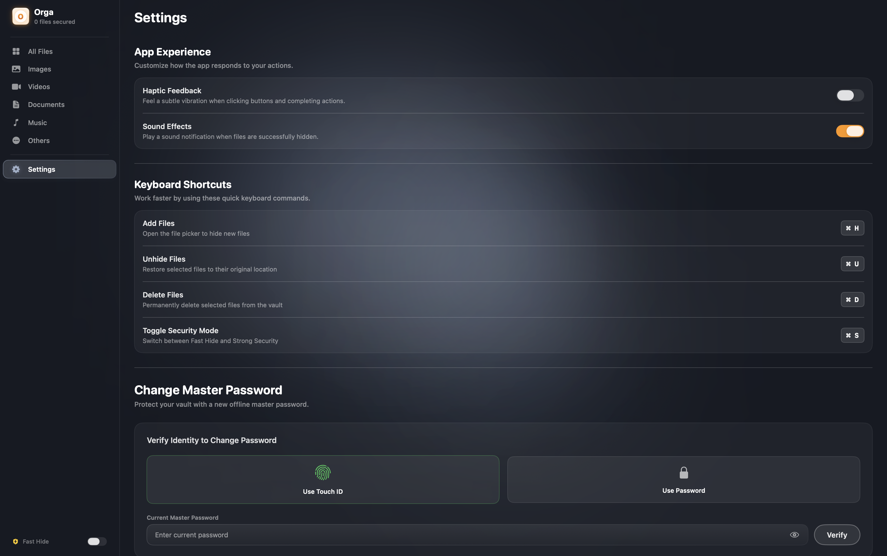
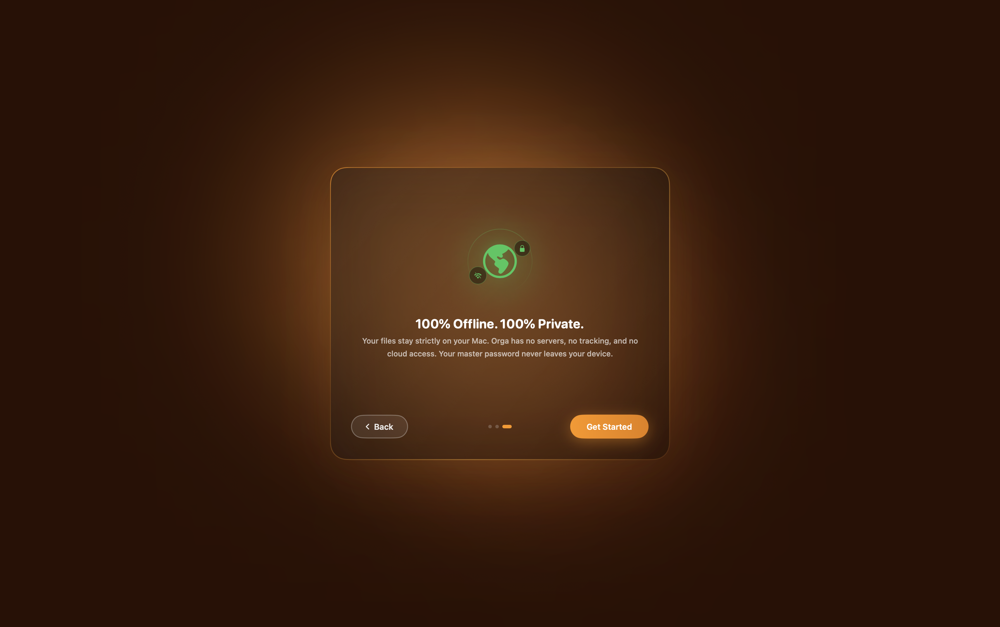

Simple, secure, and built specifically for your Mac. Keep your sensitive documents encrypted, hidden, and completely under your control.
Get up and running on your Mac in under a minute. No complicated setup, no hidden steps.
Click the download button above to get the latest Orga.zip bundle.
Double-click the zip archive in Finder to extract the native executable Orga.app.
Drag the extracted Orga.app file straight into your macOS Applications directory.
Open the app via Launchpad, set up your vault master password, and start encrypting files.
Take a tour of Orga's clean, minimalist layout. Switch tabs below to preview the native macOS experience.





Orga blends system-level security controls with native Swift frameworks to provide robust, local-first file privacy without external dependencies.
Keep your sensitive files completely out of sight in less than a second. Orga lets you instantly obscure files, making them invisible in Finder searches, lists, and Terminal:
Access your vaults securely without typing long, complex passwords every time you open a file:
Work confidently knowing Orga handles security cycles in the background, cleaning up after you:
Orga feels like a natural extension of your operating system. Navigate files with native speed and ease:
